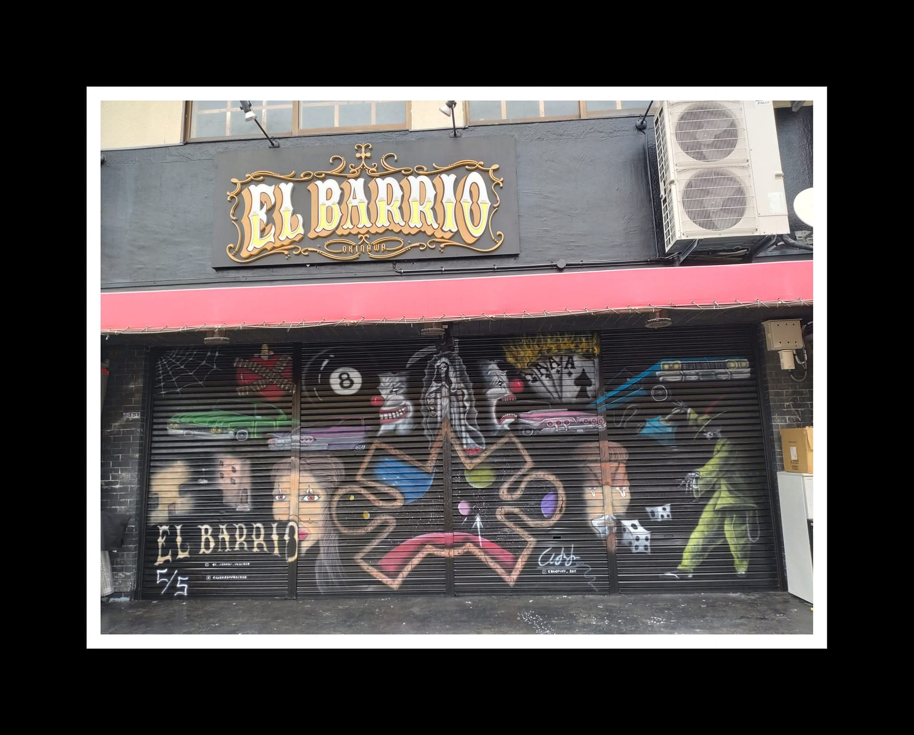

h3x-punk dark dy5t0p1a
x1can0 art Gall3ry
Inspiration: Roots, Darkness and Cyberpunk Dystopia
Shadow Canvas merges the rebellious spirit of cyberpunk with the raw energy of psychobilly and goth asthetic mixed with Xicano culture's colorful pallet, creating a mix of dark, neon and colorful aesthetic sanctuary for artists who refuse to conform. This gallery celebrates the intersection of digital dystopia, Xicanismo and vintage underground culture, where neon bleeds into shadow and ancient imagery collides with futuristic chaos.
Rooted in the vibrant El Paso art scene, we draw inspiration from the border's unique cultural fusion where pre-Colombian indigenous roots street art and a strong underground goth community, providing the perfect receipe for inspiration and for exploring themes of identity, resistance, and transformation in the digital age.
El Paso Artists Who Inspire Us
- Lupe Casillas-Lowenberg - Muralist and art educator brought cultural narratives to public spaces
- Francella Baca - Self-taught contemporary artist exploring identity, indigenous roots, and border culture
- Babak Tavakoli - Visual artist pushing boundaries with mixed media and bold concepts